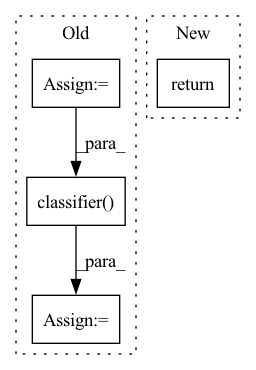

Pattern ID :21820
Before Change
def forward(self, x):
x = self.model.encoder(x)
x = x.view(x.size(0), -1)
x = self.model.classifier( x)
return x
def load_criterion(self):
return nn.BCEWithLogitsLoss()After Change
self.model.classifier = self.model.classifier[:-3]
def forward(self, x):
return self.model.forward(x)
def load_criterion(self):
return nn.BCEWithLogitsLoss()In pattern: SUPERPATTERN
Frequency: 4
Non-data size: 4
Instances Fragment ID: 69453203
Project Name: biasvariancelabs/aitlas
Commit Name: 3c4c781681550868173efe6230071ba63a1b65d2
Time: 2020-12-30
Author: ivan.kitanovski@gmail.com
File Name: aitlas/models/vgg16.py
M Class Name: VGG16MultiLabel
N Class Name: VGG16MultiLabel
M Method Name: forward(2)
N Method Name: forward(2)
M Parent Class: BaseMultilabelClassifier
N Parent Class: BaseMultilabelClassifier
M File Name: aitlas/models/vgg16.py
N File Name: aitlas/models/vgg16.py
M Start Line: 50
M End Line: 53
N Start Line: 41
N End Line: 41
Before Change
def forward(self, x: torch.Tensor) -> torch.Tensor:
out = self.features(x)
out = torch.flatten(out, 1)
out = self.classifier( out)
return out
After Change
self._initialize_weights()
def forward(self, x: torch.Tensor) -> torch.Tensor:
return self._forward_impl(x)
// Support torch.script function
def _forward_impl(self, x: torch.Tensor) -> torch.Tensor: Fragment ID: 69453202
Project Name: lornatang/real_esrgan-pytorch
Commit Name: 970341e87f464419e32467947031495583f70c77
Time: 2022-04-18
Author: liuchangyu1111@gmail.com
File Name: model.py
M Class Name: Discriminator
N Class Name: Discriminator
M Method Name: forward(2)
N Method Name: forward(2)
M Parent Class: nn.Module
N Parent Class: nn.Module
M File Name: model.py
N File Name: model.py
M Start Line: 171
M End Line: 175
N Start Line: 160
N End Line: 160
Before Change
return [optimizer], [scheduler]
def forward(self, X):
feat = self.encoder(X)
// stop gradients from the classifier
logits = self.classifier( feat.detach())
return {"logits": logits, "feat": feat}
def validation_step(self, batch, batch_idx):
X, target = batchAfter Change
return [optimizer], [scheduler]
def forward(self, *args, **kwargs):
return self._base_forward(*args, **kwargs)
def _base_forward(self, X, detach_feats=True):
feats = self.encoder(X) Fragment ID: 69453206
Project Name: vturrisi/solo-learn
Commit Name: a47bb52eeeb836a919c105a9dcd27930c9124ec4
Time: 2021-06-14
Author: vt.turrisi@gmail.com
File Name: solo/methods/base.py
M Class Name: BaseModel
N Class Name: BaseModel
M Method Name: forward(1)
N Method Name: forward(2)
M Parent Class: pl.LightningModule
N Parent Class: pl.LightningModule
M File Name: solo/methods/base.py
N File Name: solo/methods/base.py
M Start Line: 205
M End Line: 208
N Start Line: 217
N End Line: 217